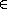

![[srfi-67-Z-G-D-8.png]](srfi-67-Z-G-D-8.png) j.
In particular, this is the case for n {0,1}.
j.
In particular, this is the case for n {0,1}.| Sebastian Egner | Jens Axel Søgaard | |
| sebastian.egner-at-philips.com | jensaxel-at-soegaard.net |
Other formats are available at srfi.schemers.org:
December 3, 2005
4 Specification
4.1 Comparing atoms
4.2 Comparing lists and vectors
4.3 Comparing pairs and improper lists
4.4 The default compare procedure
4.5 Constructing compare procedures
4.6 Using compare procedures
5 The theory of compare functions
Copyright (c) 2005 Sebastian Egner and Jens Axel Søgaard.
Permission is hereby granted, free of charge, to any person obtaining a copy of this software and associated documentation files (the ``Software''), to deal in the Software without restriction, including without limitation the rights to use, copy, modify, merge, publish, distribute, sublicense, and/or sell copies of the Software, and to permit persons to whom the Software is furnished to do so, subject to the following conditions:
The above copyright notice and this permission notice shall be included in all copies or substantial portions of the Software.
THE SOFTWARE IS PROVIDED ``AS IS'', WITHOUT WARRANTY OF ANY KIND, EXPRESS OR IMPLIED, INCLUDING BUT NOT LIMITED TO THE WARRANTIES OF MERCHANTABILITY, FITNESS FOR A PARTICULAR PURPOSE AND NONINFRINGEMENT. IN NO EVENT SHALL THE AUTHORS OR COPYRIGHT HOLDERS BE LIABLE FOR ANY CLAIM, DAMAGES OR OTHER LIABILITY, WHETHER IN AN ACTION OF CONTRACT, TORT OR OTHERWISE, ARISING FROM, OUT OF OR IN CONNECTION WITH THE SOFTWARE OR THE USE OR OTHER DEALINGS IN THE SOFTWARE.
This SRFI can be seen as an extension of the standard procedures =, <, char<? etc. of R5RS -- or even as a replacement. The primary design aspect in this SRFI is the separation of representing a total order and using it. For representing the order, we have chosen for truly 3-way comparisons. For using it we provide an extensive set of operations, each of which accepts a procedure used for comparison. Since these compare procedures are often optional, comparing built-in types is as convenient as R5RS , sometimes more convenient: For example, testing if the integer index i lies in the integer range {0, ..., n - 1} can be written as (<=/<? 0 i n), implicitly invoking default-compare.
As soon as new total orders are required, the infrastructure provided by this SRFI is far more convenient and often even more efficient than building each total order from scratch.
Moreover, in case Scheme users and implementors find this mechanism useful and adopt it, the benefit of having a uniform interface to total orders to be used in data structures will manifest itself. Most concretely, a new sorting procedure in the spirit of this SRFI would have the interface (my-sort [ compare ] xs), using default-compare if the optional compare was not provided. Then my-sort could be defined using the entire infrastructure of this SRFI: Efficient 2- and 3-way branching, testing for chains and pairwise inequality, min/max, and general order statistics.
This SRFI defines a mechanism for comparing Scheme values with respect to a total order (aka linear order) [1]. The mechanism provides operations for:
comparing objects of the built-in types,
using a total order in situations that arise in programs,
facilitating the definition of a new total order.
In the following, these aspects will briefly be illustrated.
Traditionally, a total order is represented in Scheme by an order predicate, like < or char<?. For the purpose of this SRFI, however, a total order is represented by a Scheme-procedure comparing its two arguments and returning either -1, 0, or 1 depending on whether the first argument is considered smaller, equal, or greater than the second argument respectively. Examples of such compare procedures include (lambda (x y) (sign (- x y))) for comparing real numbers, but also (lambda (x y) 0) comparing anything. For most built-in types specified in the Revised5 Report on the Algorithmic Language Scheme ( R5RS , [3]) compare procedures are specified in Sections 4.1, 4.2, and 4.3 of this SRFI. An axiomatic definition of ``compare procedure'' is given in Section 5.
The primary reason for using 3-valued compare procedures instead of (2-valued) order predicates is efficiency: When comparison is computationally expensive, it is wasteful if two predicates are evaluated where a single 3-valued comparison would suffice. This point is discussed in greater detail in Section 6.
But dealing directly with 3-valued comparisons in the application program is inconvenient and obscures intention: For testing x < y one would have to write (eqv? (compare x y) -1). For this reason, an operation <? is supplied which allows to phrase the same test as (<? compare x y). This is an example of mapping the three possible outcomes of a comparison into the two boolean values {#f, #t}. Since <? takes the total order as an explicit parameter, a comfortably large arsenal of tests can be made available for each and every total order (Section 4.6). This deviates from the approach of R5RS , in which there are only five operations ( = , <, >, <, >) -- and for each total order (real/number, char, char-ci, string, string-ci) a complete set of these five operation is provided.
But still, using <? would be inconvenient if the compare procedure would have to be supplied explicitly every time. For this reason, the parameter compare is often made optional in this SRFI -- and the procedure default-compare is used whenever no compare procedure is passed explicitly. Default-compare (Section 4.4) defines some resonable total order on the built-in types of R5RS .
For the third aspect of this SRFI, defining compare procedures, special control structures (macros) are provided (Section 4.5). These control structures can be used in the definition of a (potentially recursive) compare procedure. This is best explained by an extended example.
Assume there is a type length representing physical length. The type has an accessor procedure meters returning the length in meters (a real number). A compare procedure for lengths can then be defined in terms of real-compare (Section 4.1) as:
(define (length-compare length1 length2)Now, (<? length-compare x y) tests if length x is shorter than length y. Also, (<=/<? length-compare a x b) tests if length x lies between length a (incl.) and length b (excl.) The expression (min-compare length-compare x y z) is a shortest of the lengths x, y, and z. Likewise, (chain<? length-compare x1 x2 x3 x4) test if the lengths x1 x2 x3 x3 are strictly increasing, and so on (refer to Section 4.6).
Furthermore, assume there is another type box representing a physical box. The type has procedures width, height, and depth accessing the dimension (each giving a length). A compare procedure for boxes, comparing first by width then by height and then by depth, can be defined using the control structure refine-compare (Section 4.5) as:
(define (box-compare box1 box2)This time, (<? box-compare b1 b2) tests if box b1 is smaller than box b2 -- in the sense of the order defined. Of course, all the other tests, minimum, maximum etc. are available, too.
As a final complication, assume that there is also a type bowl with accessors radius (a length) and open? (a boolean). Bowls are to be compared first by whether they are open or closed, and then by radius. However, bowls and boxes also need to be compared to each other, ordered such that a bowl is considered ``smaller'' than a box. (There are type-test predicates box? and bowl?). Using the control structure select-compare (Section 4.5) this can be expressed as:
(define (container-compare c1 c2)This is an example of ``hierarchical extension'' of compare procedures, as explained in Section 5. Also note the implicit use of refine-compare in the bowl?-case.
The preceding example illustrates the main functionality of this SRFI. For other examples, refer to Section 4.4, and to the file examples.scm included in the reference implementation.
A compare procedure is a Scheme-procedure of two arguments returning an exact integer in { - 1,0,1} such that the valid input values are ordered according to some total order. A compare procedure, together with a set of Scheme values to which it is applicable, represents a compare function as defined in Section 5.
A comparison is either an expression applying a compare procedure to two values, or the result of such an expression.
Each operation (macro or procedure) processing the value of a comparison checks if the value is indeed an exact integer in the set { - 1,0,1}. If this is not the case, an error is signalled.
Compare procedures expecting certain types of argument should raise an error in case the arguments are not of this type. For most compare procedures specified in this SRFI, this behavior is required. A compare procedure compare can be used for type-checking value x by evaluating (compare x x), in case that is desired. This is useful in procedures like chain<? which guarantee to check each argument unconditionally.
In this section, compare procedures for most of the atomic types of R5RS are defined: Booleans, characters, strings, symbols, and numbers.
As a general naming convention, a procedure named
| type-compare-order |
compares two object of the type type with respect to a total order for which order is a mnemonic hint (e.g. -ci for case-insensitive). Of course, -order may be absent if there is just one order or the order is obvious. It is an error if a compare procedure accepting objects of a certain type is called with one or two arguments not of that type.
Compares two booleans, ordered by #f < #t.
Note: A non-#f value is not interpreted as a ``true value,'' but rather an error will be signalled.
Note: Compare-string could be defined as(define (string-compare string1 string2)
(vector-compare-as-list char-compare
string1 string2
string-length string-ref))
Complex numbers are ordered lexicographically on pairs (re, im). For objects representing real numbers sign(x - y) is computed. The ordering for values satisfying real? or complex? but not representing a real or complex number should be consistent with procedures = and < of R5RS , and apart from that it is unspecified.
Numerical compare procedures are compatible with the R5RS numerical tower in the following sense: If S is a subtype of the numerical type T and x, y can be represented both in S and in T, then compare-S and compare-T compute the same result.
Note: Floating point formats usually include several symbolic values not simply representing rational numbers. For example, the IEEE 754 standard defines -0, -Inf, +Inf, and NaN ("not a number") for continuing a calculation in the presence of error conditions. The behavior of the numerical comparison operation is unspecified in case an argument is one of the special symbols.Warning: The propagation of inexactness can lead to surprises. In a Scheme system propagating inexactness in complex numbers (such as PLT, version 208):
(complex-compare (make-rectangular (/ 1 3) 1.)
In this section compare procedures are defined for Scheme lists and vectors -- and for objects that can be accessed like lists or like vectors.
An object x can be accessed like a vector if there are procedures size and ref such that (size x) is a non-negative integer n indicating the number of elements, and (ref x i) is the i-th element of x for i  {0, ..., n - 1}. The default vector access procedures are vector-length and vector-ref.
An object x can be accessed like a (proper) list if there are procedures empty?, head, and tail such that (empty? x) is a boolean indicating that there are no elements in x, (head x) is the first element of x, and (tail x) is an object representing the residual elements of x. The default list access procedures are null?, car, and cdr.
Independent of the way the elements are accessed, the natural ordering of vectors and lists differs: Sequences are compared as vectors if shorter sequences are smaller than longer sequences, and sequences of the same size are compared lexicographically. Sequences are compared as lists if the empty sequence is smallest, and two non-empty sequences are compared by their first elements, and only if the first elements are equal the residual sequences are compared, recursively.
Compare two sequences x and y, using compare for comparing elements. The result is an exact integer in { - 1, 0, 1}. If compare is not supplied, default-compare is used.The procedure named access-compare-as-order accesses the objects like access and compares them with respect to the order given by order. The names type-compare are abbreviations for type-compare-as-type.
Examples:
(list-compare '(2) '(1 2)) ===> 1
In this section, compare procedures for Scheme pairs and (possibly) improper lists are defined.
Construct a compare procedure on pairs which only uses the car (only the cdr, respectively), and ignores the other. One could define
(define (pair-compare-car compare)
Rationale: Pair-compare-car can be used to turn a search data structure (e.g. a heap) into a dictionary: Store (key . value) pairs and compare them using the compare procedure (pair-compare-car compare-key).
The 4-ary form compares two pairs pair1 pair2 by comparing their cars using compare-car, and if the cars are equal the cdrs are compared using compare-cdr.
The 3-ary form compares two objects by type using the ordering of types
| null < pair < neither-null-nor-pair. |
Two objects of type neither-null-nor-pair are compared using compare. Two pairs are compared by using compare on the cars, and if the cars are equal by recursing on the cdrs.
The 2-ary form uses default-compare for compare.
(pair-compare '() 'foo) ===> -1
It is convenient to have a compare procedure readily available for comparing most built-in types.
compares its arguments by type using the ordering
| null < pair < boolean < char < string < symbol < number < vector < other |
Two objects of the same type type are compared as type-compare would, if there is such a procedure. The type null consists of the empty list '(). The effect of comparing two other objects or of comparing cyclic structures (made from lists or vectors) is unspecified. (Implementations are encouraged to add comparisons for other built-in types, e.g. records, regexps, etc.)
Rationale: Default-compare refines pair-compare by splitting neither-null-nor-pair.
Note: Default-compare could be defined as follows (mind the order of the cases!):(define (default-compare x y)
(select-compare x y
(null? 0)
(pair? (default-compare (car x) (car y))
(default-compare (cdr x) (cdr y)))
(boolean? (boolean-compare x y))
(char? (char-compare x y))
(string? (string-compare x y))
(symbol? (symbol-compare x y))
(number? (number-compare x y))
(vector? (vector-compare default-compare x y))
(else (error "unrecognized types" x y))))
An important goal of this SRFI is to provide a mechanism for defining new compare procedures as conveniently as possible. The syntactic extensions defined in this section are the primary utilities for doing so.
Syntax: The <ci> are expressions.
Semantics: The arguments <c1> ...are evaluated from left to right until a non-zero value is found (which then is the value) or until there are no more arguments to evaluate (in which case the value is 0). It is allowed that there are no arguments at all.
Note: This macro is the preferred way to define a compare procedure as a refinement (refer to Section 5). Example:(define (compare-rectangle r s)
(refine-compare
(compare-length (width r) (width s))
(compare-length (height r) (height s))))
Semantics: Select-compare is a conditional for defining hierarchical extensions and refinements of compare procedures (refer to Section 5). It compares the values of <x1> and <x2> by trying the type tests in order, and applies an implict refine-compare on the consequences upon a match.
In more detail, evaluation proceeds as follows: First <x1> and <x2> are evaluated in unspecified order, resulting in values x1 and x2, respectively. Then the clauses are evaluated one by one, from left to right.
For clause (<type?> <c1> ...), first <type?> is evaluated resulting in a predicate procedure type? and then the expressions (type? x1) and (type? x2) are evaluated and interpreted as booleans. If both booleans are true then the overall value is (refine-compare <c1> ...). If only the first is true the result is -1, if only the second is true the result is 1, and if neither is true the next clause is considered. An else clause is treated as if both tests where true. If there are no clauses left, the result is 0.
Select-compare evaluates <x1> and <x2> exactly once, even in the absence of any clauses. Moreover, each <type?> is evaluated at most once and the resulting procedure type? is called at most twice.
Note: An example of select-compare is the definition of default-compare given above.
Semantics: Cond-compare is another conditional for defining hierarchical extensions and refinements of compare procedures (refer to Section 5).
Evaluation proceeds as follows: The clauses are evaluated one by one, from left to right. For clause ((<t1> <t2>) <c1> ...), first <t1> and <t2> are evaluated and the results are interpreted as boolean values. If both booleans are true then the overall value is (refine-compare <c1> ...). If only the first is true the result is -1, if only the second is true the result is 1, and if neither is true the next clause is considered. An else clause is treated as if both booleans where true. If there are no clauses left (or there are no clauses to begin with), the result is 0.
Cond-compare evaluates each expression at most once.
Rationale: Cond-compare and select-compare only differ in the way the type tests are specified. Both ways are equivalent, and each way is sometimes more convenient than the other.
The facilities defined in this section provide a mechanism for using a compare procedure (passed as a parameter) in the different situations arising in applications.
Syntax: <c>, <less>, <equal>, and <greater> are expressions.
Semantics: If3 is the 3-way conditional for comparisons. First <c> is evaluated, resulting in value c. The value c must be an exact integer in { - 1, 0, 1}, otherwise an error is signalled. If c = - 1 then the value of the if3-expression is obtained by evaluating <less>. If c = 0 then <equal> is evaluated. If c = 1 then <greater> is evaluated.
Note: As an example, the following procedure inserts x into the sorted list s, possibly replacing the first equivalent element.(define (insert compare x s)
(if (null? s)
(list x)
(if3 (compare x (car s))
(cons x s)
(cons x (cdr s)) ; replace
(cons (car s) (insert compare x (cdr s))))))
Rationale: If3 is the preferred way of branching on the result of a comparison in case all three branches are different.
Semantics: These six macros are 2-way conditionals for comparisons. First <c> is evaluated, resulting in value c. The value c must be an exact integer in { - 1, 0, 1}, otherwise an error is signalled. Then, depending on the value of c and the name of the macro, either <consequence> or <alternate> is evaluated, and the resulting value is the value of the conditional expression.
The branch is chosen according to the following table:
|
Note: The macros if<=? etc. are the preferred way of 2-way branching based on the result of a comparison.
In the forms (rel? [ compare ] x y), the result is a boolean (either #t or #f) depending on (compare x y) and the test rel? as specified for if<? etc. If compare is not supplied, default-compare is used.
In the form (rel? [ compare ]), the predicate procedure (lambda (x y) (rel? compare x y)) is constructed. Again, if compare is not supplied, default-compare is used.
A few examples for illustration
(>? "laugh" "LOUD") ===> #tWarning: A common mistake is writing (<=? x y z) where (<=/<=? x y z) is meant; this will most likely manifest itself at the time the expression (x y z) is evaluated.
If compare is not provided, default-compare is used. If x y z are not provided, a predicate procedure of three arguments is constructed. The order in which the values are compared is unspecified, but each value is compared at least once.
Note: (<=/<? real-compare 0 x 1) tests if x is a real number in the half open interval [0,1).
A sequence of values x1, ..., xn forms a chain with respect to the relation rel? if (rel? compare xi xj) for all 1 < i < j < n. In particular, this is the case for n {0,1}.
Since the relations = , <, >, <, and > are transitive, it is sufficient to test (rel? compare xi xi+1) for 1 < i < n.
Note: The reason every xi participates in at least one comparison is type-checking: After testing if the values form a chain, these value may be assumed to be of the type comparable by compare -- and this holds irrespectively of the number of values, or whether they form a chain.
The values x1, ..., xn are pairwise unequal if
(not=? compare xi xj) for all i j.
In particular, this is the case for n {0,1}.
Since compare defines a total ordering on the values, the property can be checked in time O(n log n), and implementations are required to do this. (For example by first sorting and then comparing adjacent elements).
The result is the first value that is minimal (maximal, respectively). The order in which the values are compared is unspecified, but each value is compared at least once (even if there is just one value).
More precisely, (kth-largest compare k x0 ... xn-1) returns the (modulo k n)-th element of the unique sequence obtained by stably sorting (x0 ··· xn-1). (Recall that a sorting algorithm is stable if it does not permute items with equal key, i.e. equivalent w.r.t. compare).
The argument k is an exact integer, and n > 1. The order in which the values xi are compared is unspecified, but each value is compared at least once (even if there is just one value).
Note: The 0-th largest element is the minimum, the ( - 1)-st largest element is the maximum. The median is the (n - 1)/2-th largest element if n is odd, and the average of the (n/2 - 1)-st and n/2-th largest elements if n is even.
The predicate procedures mean the following: (lt-pred x y) tests if x < y, le-pred tests for <, gt-pred for >, ge-pred for >, and eq-pred tests if x and y are equivalent. The result returned by a predicate procedure is interpreted as a Scheme truth value (i.e. #f is false and non-#f is true).
The purpose of the procedures compare-bypredicate(s) is to define a compare procedure from an order predicate, and possibly an additional equivalence predicate. If an equivalence predicate eq-pred is given, it is called before the order predicate because the equivalence may be coarser than the total ordering, and it may also be cheaper.
Note: Char-compare could be defined in terms of char<=? as(define char-compare (compare-by<= char<=?))
More specifically, (debug-compare compare) evaluates to a compare procedure compare1 which checks reflexivity, antisymmetry, and transitivity of compare based on the arguments on which compare1 is called:
The procedure compare1 checks reflexivity on any value passed to compare, antisymmetry on any pair of values on which compare is called, and transitivity on triples where two of the arguments are from the current call to compare1 and the third is a pseudo-random selection from the two arguments of the previous call to compare1.
Rationale: The test coverage is partial and determined pseudo-randomly, but the execution time of compare1 is only a constant factor larger than the execution time of compare.
NOTE: This section of the SRFI-document can be read at srfi.schemers.org/srfi-67/. It was removed from the HelpDesk version due to the math.
The section contains a theoretical justification for the concept ``compare function''. First an axiomatic definition of compare functions is given. Then it is proved that compare functions are just an unconventional way of defining total orders on equivalence classes of elements -- and mathematically that is all there is to say about compare functions.
At this point, a mathematician may wonder why we introduce compare functions in the first place. The answer is: Because they are convenient and efficient for writing programs involving total orders.
In this section we present our reasoning behind the design decisions made for this SRFI. We would like to be explicit on this because we believe that design is not about the outcome of decisions but about the alternatives considered. The section is organized as a Q&A list.
It is mathematical tradition to specify a total order in terms of a ``less or equal'' (<) relation. This usually carries over to programming languages in the form of a <= predicate procedure.
However, there are inherently three possible relations between two elements x and y with respect to a total order: x < y, x = y, and x > y. (With respect to a partial order there is a fourth: x and y are uncomparable.) This implies that any mechanism based on 2-valued operations (be it <, or ( = , <), or other) has cases in which two expressions must be evaluated in order to determine the relation between two elements.
In practice, this is a problem if a comparison is computationally expensive. Examples of this are implicitly defined orders in which the order of elements depends on their relative position in some enumeration. (Think of comparing graphs by isomorphism type.) In this case, each order predicate is as expensive as a compare procedure -- implying that a proper 3-way branch could be twice as fast as cascaded 2-way branches. Hence, there is a potentially considerable loss in performance, and it is purely due to the interface for comparisons.
The primary disadvantage of bare 3-way comparisons is that they are less convenient, both in use and in their definition. Luckily, this problem can be solved quite satisfactorily using the syntactic (macro) and procedural abstractions of Scheme (refer to Sections 4.5 and 4.6).
We have considered the following alternatives for representing the three possible results of a comparison:
the exact integers -1, 0, and 1 (used in this SRFI),
the sign of an exact immediate integer,
the sign of any Scheme number satisfying real?,
three different symbols (e.g. '<, '=, and '>),
an enumeration type consisting of three elements, and
a built-in type with self-evaluating special constants (e.g. #<, #=, and #>).
The representation acts as an internal interface between programs comparing objects and programs using these comparisons.
The advantage of using only three values is that the representation of each case is uniquely defined. In particular, this enables the use of case instead of if, and it ensures portability. Portability of numbers is problematic in R5RS due to underspecification and inexactness.
The advantage of using a non-unique (numerical) representation is that the result of a computation can sometimes immediately be used in a branch, much like the ``non-#f means true''-convention. However, with the operations in Section 4.6 this advantage hardly matters. Moreover, the ``non-#f means true''-convention is a major cause of unexpected program behavior itself.
The advantage of using { - 1, 0, 1} over using three symbols is that the integers support additional operations, for example they can directly be used in index computations. A particularly useful operation is (* sign (compare x y)) which inverts the order relation depending on sign (either - 1 or 1). In addition, the integers are unique -- once it is known that comparisons result in integers it is obvious which integers. A minor consideration is that Scheme systems usually treat small integers as unboxed values, and that integers are self-evaluating literals.
The advantage of using three symbols is that they can be chosen to be more descriptive. For example, it is more instructive to see (symbol-compare 'foo 'bar) result in 'greater than in 1. Unfortunately, there is no obvious choice of name for the three symbols. Amoung the choices that make sense are 'less 'equal 'greater, or 'lt 'eq 'gt, or '< '= '>. A disadvantage of using symbols for the three cases is that Scheme symbols are ordered, too, and this ordering may differ from the desired ordered for the three cases.
Some Scheme implementations provide a mechanism for defining enumeration types. For example define-enumerated-type of Scheme 48 can be used to define a type comparison consisting of three objects, say lt, eq, gt. The enumeration can also (directly) be defined on top of SRFI 9 (Defining Record Types) [10] by defining three new record types, each of which having a single instance. We regard this approach as preferable over three symbols because comparison results have their own type, and a sufficiently advanced compiler could use this information to eliminate redundant type-checks.
One step further in this direction is the following design alternative we have considered: Due to the fundamental nature of the type comparison for programming, it would be worthwhile integrating it into the core language of Scheme. This could take the following form: There are three self-evaluating constants, e.g. written #< #= #>, and these are the only instances of the type comparison. The type supports two operations: comparison? and comparison-compare. Furthermore, eq?, eqv?, and equal? need to understand the comparison values. In other words, comparison is designed after boolean. It is unclear, however, which problem this tight integration of comparisons into the language is solving.
Given this situation, we have chosen for { - 1,0,1}, while providing facilities for using this conveniently -- in particular it is hardly ever necessary to deal with the integers directly.
Mathematically, no total order of the complex numbers exists which is compatible with the algebraic or topological structure. Nevertheless, it is useful for programming purposes to have some total order of complex numbers readily available.
Several total orders on the complex numbers are at least compatible with the natural ordering of real numbers. The least surprising of these is lexicographic on (re, im).
Floating point formats often do not only represent rational numbers but extend this set by special symbols, for example +Inf, -Inf, NaN (``Not a number''), and -0. How should these symbols be ordered with respect to the ordinary numerical values and with respect to each other? (Refer to the discussion archive starting with msg00010.)
Let us briefly recall the purpose of the special symbols. The general rationale for introducing special symbols into a floating point format is for numerical calculations to continue in the presence of data-dependent errors, while still retaining some meaningful information about the result. The symbols +Inf and -Inf indicate that the calculation has produced a value exceeding the representable range. The special symbol -0, indicates that a calculation has produced a value of unrepresentable small magnitude, but retains the information that the underflow approached zero from the negative side (otherwise it would be +0). This sign information is useful in the presence of branch-cuts. Finally, NaN indicates that the information about the value has been lost entirely (example: -Inf + Inf) NaN avoids raising an exception and allows carrying on with other parts of the calculation. It should be noted that several NaNs can exist. For example in the IEEE 754 standard many bit patterns represent NaN (whatever the interpretation).
As +Inf and -Inf are designed to represent extremal numbers, their ordering with respect to real numbers is obvious. For signed zeros, the ordering is also obvious. However, the notion of two zeros (or even three: -0, 0, and +0) is incompatible with the arithmetic structure of the real numbers. Hence, in most situations all zeros should be treated as equal, even though this can destroy information about results. But the alternative design may also make sense in certain situations where the full information carried in a floating point object is to be retained.
For NaN (or even several NaNs) the situation is even more ambiguous because there is not even a natural order relation of NaN with the other possible floating point values. One design alternative is to raise an error if NaN is to participate in a comparison; the reasoning being ``if the control flow depends on a NaN you are in trouble anyway''. An alternative is to define some order by force; the reasoning being ``if an object satisfies real? then it can be compared with real-compare.'' Neither approach is obviously better than the other.
Given this situation, we have decided to leave the effect of using a special floating point value in real-compare unspecified, in line with the approach of R5RS . This approach might change once Scheme itself is more explicit about floating point representations and numerical computation.
The purpose of default-compare is providing some well-defined way of comparing two arbitrary Scheme values. This can be used in all situations in which the user is unwilling to define a compare procedure explicitly, for example because the actual details of the total order do not really matter.
As an example, consider the task of dealing with sets of sets of integers. In this case, one could simply use sorted lists without repetition for representing lists and default-compare already provides a total order.
However, there are limits as to how default-compare can be defined. For example, default-compare cannot easily be based on a hash code derived from the pointer representing an object due to the close dependency with the garbage collection mechanism. Also, we believe it to be more useful to applications if default-compare is based on type and structure.
Unfortunately, this imposes limits on what can be compared using default-compare because it is very desirable to have a portable reference implementation. In particular, portable ways of dealing with circular structures are overly costly.
Naturally, the question arises how the types should be ordered. For this question it is useful to understand that boolean-compare and pair-compare both already define a total order for all values (at least in priciple). Hence, default-compare could refine one of them, but unfortunately not both at the same time (unless #f and '() are minimum and maximum of the order, respectively). Since pair-compare is more frequently used than boolean-compare we base default-compare on pair-compare. The other portably comparable types are ordered by increasing complexity, which clearly is an arbitrary choice.
The lexicographic order is a general way of defining an ordering for sequences from an ordering of elements:
In the lexicographic order, the empty sequence is the smallest sequence of all, and two non-empty sequences are first compared by their first element and only if these are equal the residual sequences are compared, recursively.
The lexicographic order has its name from its use in a lexicon: For example, fun < funloving < jolly.
By ``natural order'' of an abstract data type we mean a total order that is defined to match the basic operations operations supported by the data type.
The basic access operations with constant execution time for Scheme lists are null?, car, and cdr. These are exactly the operations needed for comparing two sequences lexicographically.
The constant time access operations for Scheme vectors are vector-length (size) and vector-ref (ref). Using these operations, the fundamental ordering of vectors is first comparing by size, and only if the sizes are equal, by comparing the elements lexicographically.
In this SRFI, lists and strings are ordered lexicographically (`LEX') by default, e.g. "12" < "2". The default order of vectors is first by length and then lexicographically (`LENGTH-LEX'), e.g. #(2) < #(1 2). Alternatively, vectors could be ordered purely lexicographically, too. In the extreme, lists, strings, and vectors could even be ordered lexicographically as sequences without distinguishing the concrete representation, implying "12" = (#\1 #\2) = #(#\1 #\2).
The choice affects vector-compare, default-compare, and the way orders are interpreted conceptually. Moreover, this SRFI introduces the terminology ``ordered as lists'' and ``ordered as vectors'' to refer to the two fundamental ways of lifting an order to sequences (LEX and LENGTH-LEX). The choice also has implications for any other SRFI introducing container data types (e.g. 66 and 74), in case the author wishes to specify default compare procedures compatible with this SRFI.
Summarizing the discussion, there seem to be three major arguments:
Conceptually vectors and lists are representations of sequences, and if there is only one ordering for them it should be LEX.
LENGTH-LEX is more fundamental and efficient for types supporting a constant-time `size' operation.
Conceptually strings are ``vectors of characters'' and strings are conventionally ordered LEX by default, so vectors should be ordered LEX as well in order to minimize the potential for confusion.
(Please refer to the discussion archive for details, in particular msg00054.)
We consider 2. the most important due to its mathematical nature, followed by 1. because it simplifies the design. While this controversial, we think that it is preferable to introduce different orders for different data types, and not derive every order from a single one for sequences. Finally, we consider 3. a weak argument because the default ordering of strings is motivated primarily historically for ordering written words of (small alphabet) natural languages.
Concerning other vector-like data types, such as those introduced by SRFI 66 and 74, we recommend to define a default ordering which appears most natural for the type. These can conveniently be named type-as-ordering. In cases where the order is of minor importance, we recommend to be compatible with this SRFI.
An alternative for the control structures (macros) refine-compare, select-compare, and cond-compare is a set of higher-order procedures for constructing compare procedures.
We have chosen for control structures instead of higher-order procedures for simplicity. This becomes particularly evident when a recursive compare procedure, e.g. default-compare, is to be defined. Using select-compare it is possible to define default-compare simply as a procedure calling itself in some branches (refer to the example in Section 4.4). In the higher-order approach, the procedure under construction must also be able to call itself, with arguments that are application specific. Expressing this with a flexible higher-order procedure is much more indirect.
Programs need both 2-way branching and 3-way branching. For 3-way branching, the conditional if3 is provided.
For 2-way branching, the set { - 1,0,1} of results of a comparison is mapped onto the set {#f, #t}. There are eight functions from a 3-set into a 2-set; all six non-constant functions are provided as =?, <?, etc.
The five monotonic functions can be generalized to chains of values. In order to make the compare procedure parameter optional in the ordinary comparisons, separate operations (chain<?, chain<=? etc.) are defined for chains. For the sixth operation (not=?) the generalization to pairwise unequality is defined as pairwise-not=?. This operation can be implemented efficiently because the compare procedure also defines a total order.
As chains of length three are still frequently tested in programs (think of a range check ``0 < i < n''), and often two different relations are combined, there are special operations for chains of length three (</<?, </<=?, etc.)
For convenience, the compare procedure argument is made optional as often as possible. Unfortunately, this opens up a possibility for mistake: Writing (<=? x y z) where (<=/<=? x y z) is meant. Fortunately, the mistake will likely manifest itself at the time (x y z) is evaluated.
The procedures <?, </<?, chain<? etc. could also have been specified as macros. This would have the advantage that they could make full use of ``short evaluation'': A chain of comparisons stops as soon as one of the comparisons has failed; all remaining argument expressions and comparisons need not be evaluated. This is potentially more efficient.
The advantage of procedures, on the other hand, is that in Scheme they are ``first class citizens,'' meaning that they can be passed as arguments and returned from higher-order procedures.
Taking this approach one step further, one can even require the compare procedures to check the types of all arguments, even if the result of the comparison is already known. This is what Section 6.2.5 of R5RS calls ``transitive`` behavior of the predicates =, <, etc. For example, (< 0 x y) first tests if x is positive, and only if this is the case (< x y) is tested. But even if x is not positive it is checked that y is indeed a real -- otherwise an error is raised. In ``short evaluation,'' on the contrary, if x is not positive, y can be an arbitrary Scheme value.
Clearly, ``transitive'' tests have an overhead, namely that they need to execute potentially redundant type checks. Even worse, as types are only known to the compare procedure the only way to check the type of a value is to compare it, maybe with itself (which should result in 0 by definition of a compare procedure).
The advantage of ``transitive'' comparisons is the automatic insertion of a type assertion. For example, after (chain<? integer-compare x y z) has been evaluated, no matter the result, it is known that x, y, and z are integers. We consider this advantage sufficiently important to pay the price.
It is often easier to define an order predicate, and possibly a separate equivalence relation, than it is to define a compare procedure. For this case, compare< etc. provide a convenient and robust way of constructing the associated compare procedure.
As has been learned from writing the reference implementation, despite the fact that each of these procedures is just a few lines of trivial code, they miraculously attract bugs.
You better don't.
A compare function defines a total order on equivalence classes, and vice versa (refer to Section 5). Hence, a compare procedure compare can be used to test equivalence: (=? compare x y).
In reverse, one could be tempted to define a ``compare function'' c from just an equivalence relation ~ as c(x, y) = 0 if x ~ y and c(x, y) = 1 otherwise. However, c is not antisymmetric (unless all objects are equivalent, i.e. c(x,y) = 0 for all x, y) and hence it is not a compare function. In fact, there is no way at all of avoiding a total order on the equivalence classes.
This is also reflected in the fact that there are efficient (log-time) search data structures based on a total order, but we know of no efficient (sublinear worst-case) data structures based solely on an equivalence relation. The following program takes time and space O(h), where h is the number of equivalence classes in use:
(define (equal->compare equal)
If equal is an equivalence predicate (i.e. it is reflexive, symmetric, and transitive) then (equal->compare equal) is a compare procedure for the objects comparable by equal. The total order defined is unspecified (as it depends on call sequence).
Note that the equivalence predicate equal could be defined by using a union-find data structure. But keep in mind that the equivalence relation represented by equal must not change while (equal->compare equal) is in use-so the union-find data structure must be unite classes.
As it happens, the specification of this SRFI is fully compatible with the 25 order predicates found in R5RS . The easiest way of switching is by defining the R5RS operations in terms of this SRFI. Refer to the file r5rs-to-srfi.scm for the corresponding Scheme-code.
Alternatively, each expression involving a reference to an R5RS order predicate can be transformed into an equivalent expression using the facilities of this SRFI. Be reminded though that this requires an understanding of the context of the expression in question, in particular variable bindings, macro definitions, and the use of eval.
However, if the meaning of an expression may be altered, it is often possible to increase type safety or simplicity. Consider for example the following potential replacements of (and (<= 0 i) (< i n)):
(and (<=? real-compare 0 i) (<? real-compare i n))Only the first alternative is equivalent to the original expression, but the other alternatives might be useful, too, depending on the goal.
Most procedures and macros in this SRFI are required to signal an error if an argument is not according to the type specified, in particular comparison values must be exact integer in { - 1,0,1} at all times. Alternatively, we could have specified that procedures and macros accept values as general as makes sense.
We believe that being tight on types at this fundamental level of a language pays off quickly. In particular, this will simplify debugging. Moreover, static analysis of a program will recognize more variables of a known type, which allows for more unboxed values and tighter compiled code. (Clearly, at the time of this writing this is speculative.)
Yes and no.
The focus of the reference implementation is correctness and portability; performance will very likely suffer due to the overhead of internal procedure calls and type-checking.
But as the word ``SRFI'' suggests, this document is a ``request for implementation,'' meaning we would love to see this SRFI being implemented efficiently by the implementation experts of particular Scheme systems. In practice, this means that most of the operations defined here, if not all, are supported natively.
In this case, there is no performance penalty for using the mechanisms of this SRFI -- using this SRFI might even be faster due to explicit 3-way branching and better typing.
Some operations have an optional first argument. This is in contrast to common practice in Scheme to put optional arguments after mandatory arguments.
The leading optional argument is always the argument compare, representing the total order to be used. If it is missing default-compare is used.
In the cases where we have chosen to make compare optional it is for the sake of brevity, e.g. in (<? x y) instead of enforcing (<? default-compare x y). Although an option introduces potential for confusion (e.g. (<? x y z) vs. (</<? x y z)), we consider it an important feature for interactive use and convenient programming (e.g. in (do ((i 0 (+ i 1))) ((=? i n)))).
Given our decision for optional compare, the question arises how to pass the option. In the absence of other widely accepted mechanisms for options, we can only vary the length of the argument list. For historical reasons -- before case-lambda of SRFI 16 -- optional arguments are passed at the end of the argument list for simplified parsing. On the other hand, (<? compare x y) is more consistent with the rest of the SRFI than (<? x y compare).
Unfortunately, any particular choice here is a compromise, and it is also controversial. (Please refer to the discussion archive for details, in particular msg00051.) We have chosen for notational convenience in the common case (optional compare) and for consistency within this SRFI (leading optional argument).
This SRFI specifies the five chain predicates chain=?, chain<?, chain>?, chain<=?, and chain>=?. An alterative is to define a single chain predicate that has the ordering as a parameter. (Refer to the discussion archive starting with msg00012.)
The reason we have chosen for five chain predicates is that we use compare procedures to represent orders, not predicate procedures. There are five possible order relations predicates for which a chain test makes sense. (The sixth, not=?, is not not transitive and hence requires pairwise testing.) The five chain tests are clearly defined and can be implemented efficiently, their main overhead being the call to the compare procedure.
In this SRFI min-compare accepts a compare procedure as a first mandatory argument, applying the minimum operation to the list of all other arguments. An alternative is to have min-compare accept only the compare procedure (possibly optional) and returing a procedure computing the minimum of all its arguments (with respect to the compare procedure.) In a similar fashion other operations can specified as higher-order procedures.
We have avoided higher-order procedures in this SRFI for simplicity and efficiency. As said repeatedly, compare procedures are the main vehicle to transport total orders from the code site definine an order to the code site using an order. Moreover, most operations made available through this SRFI appear rather infrequently in programs, so either way there is little to be gained. Finally, dealing with higher-order procedures often involves writing more parentheses and the more simple-minded Scheme systems will create many short-lived closures.
The procedures =?, <? etc. accept an optional compare procedure but also two optional arguments to compare. This could be made simpler by not specifying some of the cases, or by specifying different procedures for the different functions.
The operations <? etc. are the primary mechanism for using compare procedures. As such they should be versatile and concise.
Our original design had two mandatory arguments for objects to compare and an optional argument for the compare procedure, i.e. it provides a parametric comparison (<? compare x y) of two objects. Amir Livne Bar-On then raised the issue of having better support for a higher-order style of programming, i.e. ((<? compare) x y). (Refer to msg00012.)
However, in Scheme the higher-order style is less convenient than it is in curried programming languages like Haskell or ML. In practice this manifests itself as follows: The most basic and frequent case of comparing atomic objects with respect to the default ordering would read ((<=?) x y), which is just two parentheses short of optimal.
Fortunately, Dave Mason proposed a syntax for resolving the apparent alternative parametric test vs. higher order style. (Refer to msg00014.) By combining both functionalities into a single procedure, the user can choose the style at any moment.
The use of compare procedures is not new; defining control structures (if3, select-compare etc.) for dealing with them efficiently, however, seems to be new (at least we have not seen it before).
Total ordering in R5RS is represented by typed order predicates, such as <=, char<=? etc. Although a ``less or equal''-predicate is sufficient to define a total order, R5RS defines a complete set of compare predicates (that is = , <, >, <, and <) for the sake of convenience and readability. There are 25 procedures related to total orders in R5RS . These are named (=|<|>|<=|>=) and (char|string)[-ci](=|<|>|<=|>=)?.
The traditional approach in Scheme to equivalence (``Are two values treated as equal?'') is the fixed set of predicates eq?, eqv?, and equal?. Historically, this approach was motivated by the desire to compare only pointers and avoid structural recursion. This SRFI provides the generalization to arbitrary equivalence relations, provided the equivalence classes are totally ordered.
The Ruby programming language [4] provides a method <=> which is a compare procedure in the sense of this SRFI. By (re-)defining this method a total order can be defined for the instances of a class, when compared against other objects. All 2-way comparisons are based on <=>, but in Ruby essentially every method can be overloaded.
In the Haskell 98 programming language [6] order predicates and compare functions coexist. The type Ordering [6, Sect 6.1.8] is an enumeration of the three symbolic constants LT, EQ, GT. The type class Ord [6, Sect 6.3.2] asserts the presence of a total order for a type, provided the type class Eq [6, Sect 6.3.1] also asserts the presence of an equivalence. Since the default definition of the method compare is in terms of the methods == and <=, and vice versa, it can be chosen easily how to provide the total order without affecting its pattern of use.
The C function strcmp [7] of the ``string.h''-library acts as a compare procedure in the sense of this SRFI, although it is specified to return an integer of which only the sign matters. Python [5] has a built-in function cmp which is a compare procedure in the sense of this SRFI.
In SRFI-32 (Sort libraries) [13] the total orders used for sorting are represented by a ``less than'' procedure. The discussion archive [13] contains a short discussion thread on the use of 3-value comparisons under the aspect whether they can be used to improve the sorting algorithm itself.
In the Galore.plt library of data structures for PLT Scheme, total orders are represented by the signature definition (define-signature order^ (elm= elm< elm<=)).
The reference implementation is contained in the file compare.scm; it is implemented in R5RS (including hygienic macros) together with SRFI-16 (case-lambda) [9] SRFI-23 (error) [11] SRFI-27 (random-integer) [12].
Test code and examples are collected in examples.scm; it requires SRFI-42 (comprehensions) [14]. The reference implementation and the testing code have been developed and are known to run under PLT/DrScheme 208p1 [15], Scheme 48 1.1 [16], and Chicken 1.70 [17].
Code defining the order predicates of R5RS in terms of this SRFI is in the file r5rs-to-srfi.scm.
| [1] |
E. Weisstein:
Totally Ordered Set, Mathworld at Wolfram Research. TotallyOrderedSet.html |
| [2] |
E. Weisstein:
Equivalence Relation, Mathworld at Wolfram Research. mathworld.wolfram.com/EquivalenceRelation.html |
| [3] |
R. Kelsey, W. Clinger, J. Rees (eds.):
Revised5 Report on the Algorithmic Language Scheme, Higher-Order and Symbolic Computation, Vol. 11, No. 1, August, 1998. www.schemers.org/Documents/Standards/R5RS/ |
| [4] |
Y. Matsumoto:
Programming Ruby.
The Pragmatic Programmer's Guide. www.ruby-doc.org/docs/ProgrammingRuby/ |
| [5] |
G. van Rossum, F. L. Drake, Jr., (ed.):
Python Library Reference.
Release 2.4 of 30 November 2004.
Section 2.1 ``built-in functions''.
Python Software Foundation. http://docs.python.org/lib/lib.html |
| [6] |
S. Peyton Jones (ed.):
Haskell 98 Language and Libraries
The Revised Report, December 2002. http://www.haskell.org/definition/ |
| [7] |
ANSI-C ISO/IEC 9899:1999, published 1 December. http://www.open-std.org/jtc1/sc22/wg14/www/standards |
| [8] |
J. A. Søgaard:
Data Structures Galore for PLT Scheme. http://planet.plt-scheme.org:80/207.1/docs/soegaard/galore.plt/1/1/doc.txt |
| [9] |
L. T. Hansen:
SRFI 16 Syntax for procedures of variable arity. http://srfi.schemers.org/srfi-16/ |
| [10] |
R. Kelsey:
SRFI 9 Defining record types. http://srfi.schemers.org/srfi-9/ |
| [11] |
S. Houben:
SRFI 23 Error reporting mechanism. http://srfi.schemers.org/srfi-23/ |
| [12] |
S. Egner:
SRFI 27 Sources of random bits. http://srfi.schemers.org/srfi-27/ |
| [13] |
O. Shivers:
SRFI 32 Sort libraries.
Section ``Ordering, comparison functions & stability''
and mail-archive msg000{23,24,33}.html.
SRFI has been withdrawn July 17, 2003. http://srfi.schemers.org/srfi-32/ |
| [14] |
S. Egner:
SRFI 42 Eager comprehensions. http://srfi.schemers.org/srfi-42/ |
| [15] |
PLT Scheme. http://www.plt-scheme.org/ |
| [16] |
R. Kelsey, J. Rees:
Scheme48, version 1.1. http://s48.org/ |
| [17] |
Chicken, version 1.70. www.call-with-current-continuation.org. |
</<=?
</<?
<=/<=?
<=/<?
<=?
<?
=?
>/>=?
>/>?
>=/>=?
>=/>?
>=?
>?
chain<=?
chain<?
chain=?
chain>=?
chain>?
char-compare
char-compare-ci
compare-by<
compare-by<=
compare-by=/<
compare-by=/>
compare-by>
compare-by>=
complex-compare
cond-compare
if-not=?
if3
if<=?
if<?
if=?
if>=?
if>?
integer-compare
list-compare
list-compare-as-vector
pair-compare, [2]
pair-compare-car
pair-compare-cdr
pairwise-not=?
rational-compare
real-compare
refine-compare
select-compare
string-compare
string-compare-ci
symbol-compare
vector-compare
vector-compare-as-list